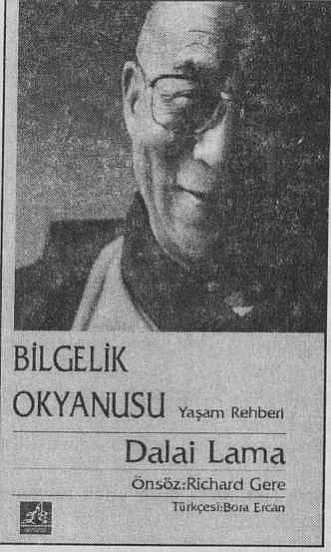

Gerçek mutluluk iç barış ve huzurdan gelir, bu da iyilik tohumlarının ekilmesiyle, sevgiyle, şefkatle ve cehaleti, bencilliği, açgözlülüğü yoketmekle gerçekleşir.
Öfke, nefret ve kıskançlıkla huzura ulaşmak olası değil. Oysa ki sevgiyle, şefkatle birçok sorunu çözebilir gerçek mutluluğa erişebiliriz, gerçek silahsızlanmaya ulaşabiliriz.
En önemli şey şefkat ve merhamettir. Onu New York kentinin renkli vitrinlerinden satın alamayız. Makinada üretemeyiz. Onu ancak içsel gelişmeyle elde edebiliriz, içsel huzura erişmeden dünya barışını elde etmek olanaksızdır.
Tenzin Gyatso Dalai Lama